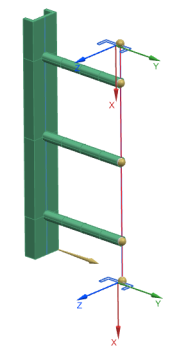
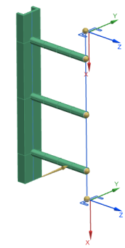
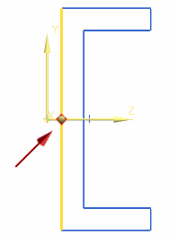
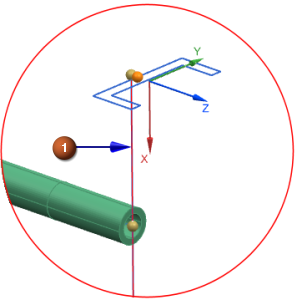
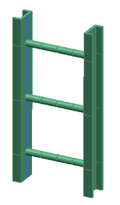

Modify beam orientation and offset on the right rail
Repeat the previous step to orient and offset the right rail.
 Simulation Navigator
Simulation Navigator
-
 1d_mesh(2)
1d_mesh(2) -
 Edit Mesh Associated Data
Edit Mesh Associated Data
-
Section Orientation
Element Axis
Y

-
Align the element Y axis to the global -Z axis.
-
Specify Vector
 -ZC Axis
-ZC Axis
-

-
End A
-
 Specify Point on Section
Specify Point on Section -
midpoint of cross section (Cross Section Preview)

-
 Done
Done -
Specify Section Location
 Inferred Point
Inferred Point  (End point - line)
(End point - line)

Tip
Use QuickPick to help you select the end point rather than the control point.
-
OK
